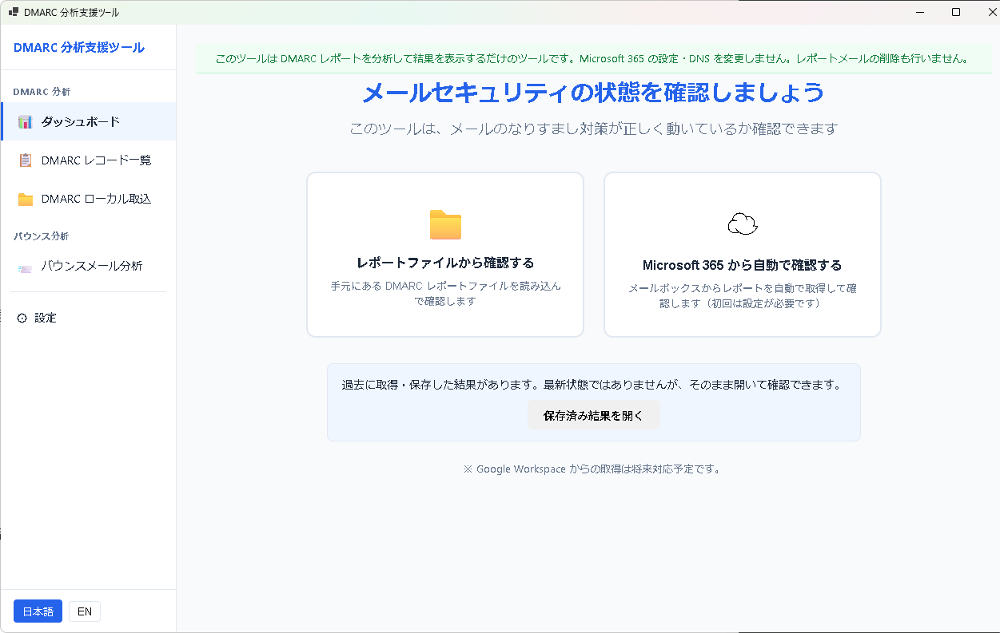
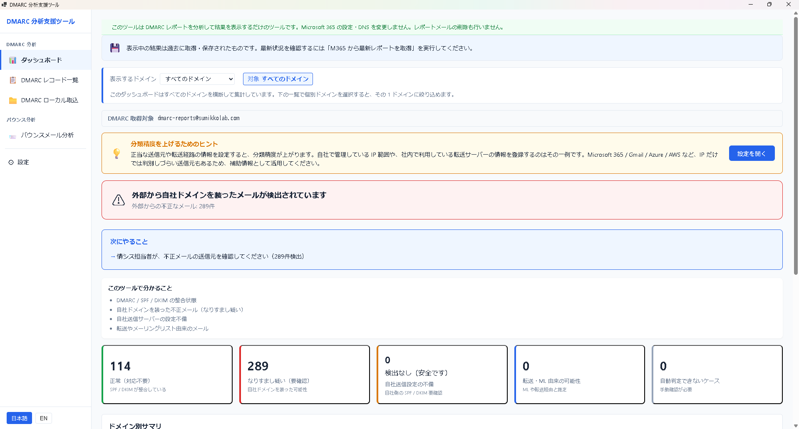
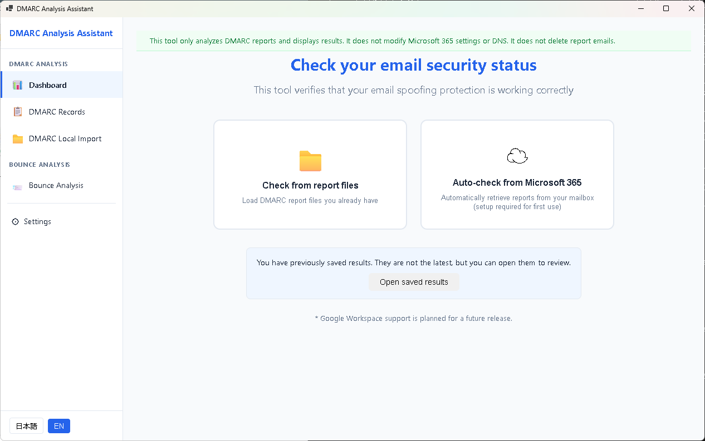
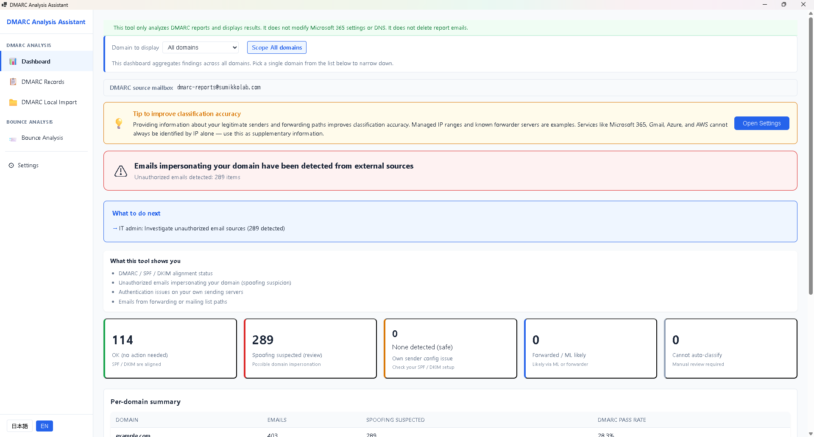

はじめに
本章では、DMARC 分析支援ツールのインストールから初回レポート取込までを説明します。
このツールができること（再掲）
- DMARC 集約レポート（RUA / XML・ZIP・GZ）をローカルで解析
- バウンスメールと突合して転送由来を切り分ける
- 各エントリを 6 分類で自動判定（ルールベース・決定論）
- ドメイン別・期間別のトレンドを可視化
- CSV でエクスポート
システム要件
- Windows 10 / 11（64-bit）
- .NET 8 Desktop Runtime（Store 経由のインストールで自動同梱）
- Microsoft Edge WebView2 Runtime（Windows 11 は通常プリインストール）
- Microsoft 365 連携を使う場合のみ: Microsoft 365 アカウントとインターネット接続
インストール
- Microsoft Store で「DMARC 分析支援ツール」を検索してインストールします。
- スタートメニューからアプリを起動します。
- 初回起動時に「利用規約・免責事項」画面が表示されます。
初回同意
- 画面に表示される利用規約および免責事項をご確認ください。
- 画面下部の「利用規約と免責事項を確認し、同意します」にチェックを入れます。
- 「同意してはじめる」ボタンをクリックすると本体 UI に進みます。
- 同意しない場合は「同意しない（アプリを終了する）」でアプリが終了します。
DMARC レポートの準備
DMARC レポートを取得するには、自社の DNS TXT レコードに DMARC ポリシーを設定し、rua= タグでレポート受信用メールアドレスを指定しておく必要があります。
例: v=DMARC1; p=none; rua=mailto:dmarc-reports@example.com
Gmail / Microsoft / Yahoo などの主要メールプロバイダーから、1 日数本〜数十本の集約レポートが届きます。届いたレポート（ZIP または GZ 添付）をフォルダに保存してください。
初回取込
- アプリの「レポート取込」画面を開きます。
- 取込元フォルダを指定します（DMARC レポートが保存されているフォルダ）。
- 「取込」ボタンを押すと、XML / ZIP / GZ を自動展開して解析が始まります。
- 完了後、ダッシュボードに集計結果が表示されます。


Microsoft 365 から直接取得する場合（任意）
Microsoft 365 の受信トレイから DMARC レポートを直接取り込むこともできます。この機能は任意で、使用する権限スコープは Mail.Read のみ（読み取り専用）です。メールの送信・削除・編集は行いません。詳細は将来の「Microsoft 365 連携」章で説明します。
次にやること
- 第 4 章 6 分類の読み方で判定ラベルの意味を確認する
- 第 7 章 トラブルシューティングで起動や取込で問題が出たときの対処を確認する
Getting Started
This chapter walks through installing the DMARC Analysis Assistant, giving first-launch consent, and importing your first DMARC reports.
What this tool does (recap)
- Analyzes DMARC aggregate reports (RUA / XML, ZIP, or GZ) locally
- Correlates bounce messages to distinguish forwarded traffic from real issues
- Classifies each entry into six categories with a deterministic rule-based engine
- Visualizes trends by domain and period
- Exports results as CSV
System requirements
- Windows 10 / 11 (64-bit)
- .NET 8 Desktop Runtime (bundled via Store installation)
- Microsoft Edge WebView2 Runtime (pre-installed on Windows 11)
- Only for Microsoft 365 integration: a Microsoft 365 account and internet access
Installation
- Search for "DMARC Analysis Assistant" in Microsoft Store and install.
- Launch the app from the Start menu.
- The "Terms of Use & Disclaimer" screen appears on first launch.
First-launch consent
- Review the Terms of Use and Disclaimer displayed on screen.
- Check "I have read and agree to the Terms of Use and Disclaimer above" at the bottom.
- Click "Agree and continue" to proceed to the main UI.
- If you do not agree, click "Decline (exit the app)" and the app will close.
Preparing DMARC reports
To receive DMARC reports, publish a DMARC policy in your DNS TXT record and specify a mailbox with the rua= tag.
Example: v=DMARC1; p=none; rua=mailto:dmarc-reports@example.com
Major providers such as Gmail, Microsoft, and Yahoo will send several to dozens of aggregate reports per day. Save received reports (ZIP or GZ attachments) to a folder.
First import
- Open the "Import reports" screen in the app.
- Specify the folder containing DMARC reports.
- Click "Import" — XML / ZIP / GZ files will be expanded and parsed automatically.
- Aggregated results will appear on the dashboard when import completes.


Importing from Microsoft 365 directly (optional)
You can also import DMARC reports directly from a Microsoft 365 mailbox. This feature is optional and uses only the Mail.Read scope (read-only). The tool never sends, deletes, or edits mail. See the future "Microsoft 365 integration" chapter for details.
Next steps
- See Chapter 4 Reading the six categories to learn what each label means.
- See Chapter 7 Troubleshooting if launch or import fails.